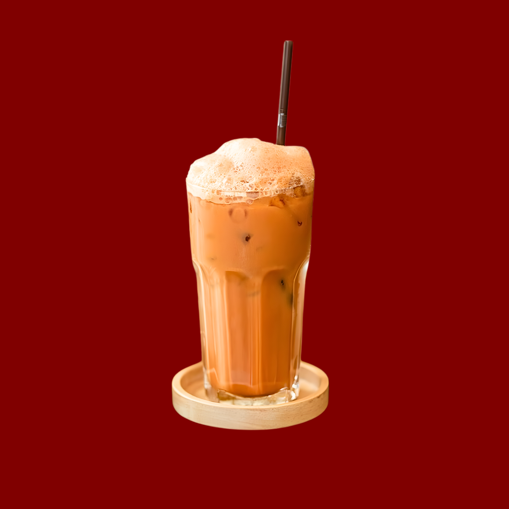

Minuman Segar

Teh Tarik Aceh
Teh saring khas Aceh dengan susu kental manis yang ditarik hingga berbusa.
Klik untuk detail
Es Teh
Minuman yang paling pas dan menyegarkan setelah makan mie Aceh.
Klik untuk detail
Kopi Sanger
Perpaduan kopi hitam pekat dengan susu kental manis yang dikocok hingga menyatu, menghadirkan rasa pahit dan manis yang seimbang dengan aroma kopi yang kuat dan khas.
Klik untuk detail
Es Jeruk Murni
Perasan jeruk asli pilihan. Manis, asam, dan menyegarkan tanpa pemanis buatan.
Klik untuk detail
Es Timun Serut
Minuman penyegar tenggorokan dari serutan timun segar dan sirup melon/jeruk nipis.
Klik untuk detail